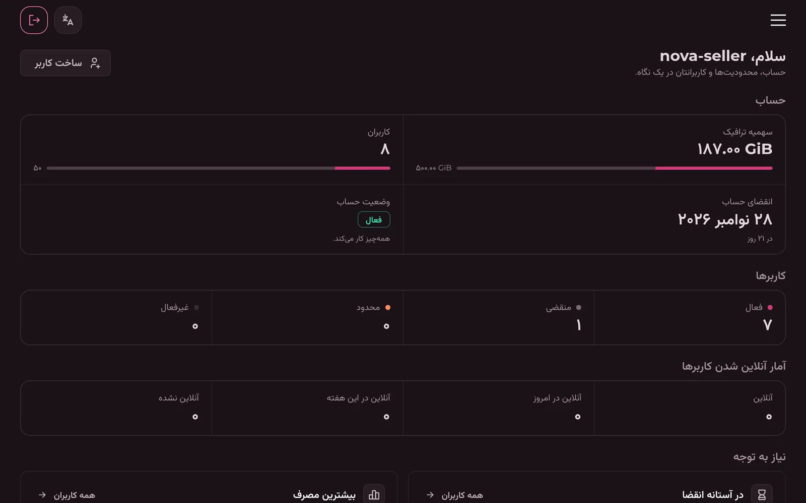

سه گروه با Umiji سروکار دارند. مالک پنل را اداره میکند: سرورها، کاربران، اشتراکها، نمایندهها و فروش. اولین حسابی که در یک پنل تازه ثبت میشود، حساب ادمین مالک میشود.
فروشندهها نمایندههای فروشاند. با همان آدرس وارد میشوند، اما پنل کوچکتری میبینند که فقط کاربران خودشان در آن است. مشتریها، یعنی کاربران نهایی، هرگز پنل را نمیبینند. سروکارشان با لینک اشتراک، صفحهی اشتراک و ربات تلگرام یک فروشنده است.
موتور پروکسی متنبازی که ترافیک کاربرانتان را جابهجا میکند. داخل نود Umiji روی هر سرور اجرا میشود. خود پنل هیچ ترافیکی را جابهجا نمیکند: کانفیگ Xray را مینویسد، کاربران را اضافه و حذف میکند و آمار ترافیک را میخواند.
نسخهی Xray هر نود روی کارت همان نود دیده میشود. مستندات خود Xray، در xtls.github.io (به انگلیسی)، همهی فیلدهایی را که در پروفایل کانفیگ میتوانید تنظیم کنید توضیح میدهد.
هر پروفایل کانفیگ چند اینباند دارد. هر نود یک پروفایل را اجرا میکند و بعضی از اینباندهایش را روشن میکند. هر هاست به یک اینباند اشاره میکند و به برنامهها میگوید کجا وصل شوند. اسکواد داخلی مجموعهای از اینباندهاست، و کاربری که در آن اسکواد باشد، همهی هاستهای قابلمشاهدهی آن اینباندها را از طریق لینک اشتراکش میگیرد.
پس اگر کسی پرسید «چرا این کاربر آلمان را نمیبیند؟»، مسیر را دنبال کنید: آیا هاست آلمان قابلمشاهده است، آیا اینباندش در یکی از اسکوادهای کاربر هست، و آیا آن اینباند روی یک نود وصل روشن است؟
یک اشتراک: یک نفر، یا یکی از دستگاههایش، که از طریق سرورهای شما وصل میشود. هر کاربر یک وضعیت، یک محدودیت ترافیک، یک تاریخ انقضا، اسکوادهای داخلیای که تعیین میکنند به کدام سرورها دسترسی دارد، و یک لینک اشتراک شخصی دارد.
نام کاربر
اجباری است و بعداً قابل تغییر نیست.
شناسه تلگرام، ایمیل
اطلاعات تماس اختیاری.
محدودیت ترافیک
به GiB یا واحدهای دیگر. 0 یعنی نامحدود.
تاریخ انقضا
زمانی که اشتراک تمام میشود.
اسکوادهای داخلی
اینکه کاربر کدام اینباندها، و در نتیجه کدام هاستها، را بگیرد.
تاریخ و ساعتی که اشتراک تمام میشود. دکمههای سریع یک ماه، سه ماه یا یک سال اضافه میکنند، و «سال 2099» عملاً یعنی هیچوقت. کاربرانی که انقضایشان نزدیک است در صفحهی کاربرها نارنجی نشان داده میشوند تا بهموقع تمدیدشان کنید.
آدرس شخصی هر کاربر، مثل https://sub.example.com/<id>. وقتی به یک برنامه اضافه شود، فهرست هاستهایی را که کاربر اجازهی استفاده از آنها را دارد، مخصوص همان برنامه، تحویل میدهد. وقتی در مرورگر باز شود، صفحهی اشتراک را نشان میدهد. برنامهها هر چند وقت یک بار آن را دوباره دریافت میکنند، پس تغییرات شما بدون فرستادن لینک تازه به کاربران میرسد.
مثل رمز عبور از آن مراقبت کنید. لغو اشتراک، در «عملیات بیشتر» کاربر، لینک تازهای میسازد و لینک قبلی را از کار میاندازد.
تعداد دستگاههایی را که میتوانند از یک اشتراک استفاده کنند محدود میکند. برنامههایی که از آن پشتیبانی میکنند، با هر درخواست یک شناسهی سختافزاری میفرستند، و وقتی کاربر به سقفش برسد، دستگاههای تازه با پیامی که خودتان مینویسید رد میشوند.
فقط وقتی کار میکند که محدودیت HWID در اشتراک ‹ تنظیمات اشتراک روشن باشد، و همهی برنامهها شناسه نمیفرستند. محدودیت پیشفرض تعداد دستگاه برای کاربرانی است که سقف مخصوص خودشان را ندارند. با غیرفعالسازی لیمیت HWID هم میتوانید یک کاربر را از این محدودیت معاف کنید.
تعداد IPهایی را که میتوانند همزمان از یک کاربر استفاده کنند، در همهی نودها محدود میکند. برخلاف لیمیت HWID، جلوی کسانی را هم که کانفیگ یا UUID را کپی کردهاند میگیرد، چون به اتصالهای زنده نگاه میکند، نه به دریافت اشتراک.
هر IP تا وقتی اتصال بازی دارد یک جا را نگه میدارد؛ پس دستگاههای روی یک وایفای یکی حساب میشوند و وقتی همهی جاها پر باشد، IP تازه رد میشود. در IPv6 همهی نشانیهای یک /64 یکی حساب میشوند. هر نود فوراً اعمالش میکند و پنل هر 30 ثانیه نودها را با هم مقایسه میکند. خالی یعنی نامحدود.
دستگاه همزمان در یک پلن یا در تست رایگان، این لیمیت را به همهی اشتراکهایی میدهد که ربات از آن میسازد.
این قابلیت آزمایشی (بتا) است و همیشه درست کار نمیکند. ممکن است دستگاههای اضافه را راه بدهد و ممکن است گوشی خود یک کاربر پولی را هم رد کند. پیش از روشن کردنش، خطرهایش را بخوانید.
لیمیت IP همزمان نشانیهای IP را میشمارد، نه آدمها یا دستگاهها را؛ پس در بعضی موقعیتها از هر دو طرف اشتباه میکند. پیش از اینکه آن را در پلنها بفروشید، روی چند کاربر امتحانش کنید.
ممکن است دستگاه خود یک کاربر پولی را رد کند. گوشیای که از وایفای به اینترنت همراه میرود IP تازهای میگیرد، در حالی که اتصالهای قبلیاش هنوز روی نود باز است. با لیمیت 1، تا بسته شدن آنها رد میشود: روی RAW تا حدود یک دقیقه و نیم، و روی WebSocket و gRPC و XHTTP تا حدود 6 دقیقه. گوشیای که همزمان از وایفای و اینترنت همراه، یا همزمان از IPv4 و IPv6 استفاده کند، ممکن است دو دستگاه حساب شود.
ممکن است دستگاههای اضافه وارد شوند. دستگاه دوم روی نودی دیگر تا حدود 30 ثانیه کار میکند و بعد قطع میشود، و این قطع شدن اتصالهایش را وسط کار میبندد. اگر پنل به نودی دسترسی نداشته باشد، یا هستهی نودی تازه ریاستارت شده باشد، آن نود مدتی فقط IPهای خودش را میشمارد؛ پس یک کاربر میتواند روی هر نود یک جا بگیرد.
ممکن است دستگاه وصلشده جایش را به دستگاه تازه بدهد. پنل فقط برای دستگاهی جا نگه میدارد که آنلاین میبیند. اگر یک لحظه آن را نبیند، چون نود آن دستگاه ریاستارت شده، ویرایش پروفایل کانفیگ هستهها را ریاستارت کرده یا نودی جواب نداده، دستگاهی که روی نود دیگری منتظر است میتواند جا را بگیرد و دستگاه اول قطع میشود.
کسانی که روی یک شبکهاند یکی حساب میشوند. همهی کسانی که پشت یک مودم یا در یک ادارهاند یک IP دارند، و اپراتورهای موبایل هم اغلب مشتریهای زیادی را پشت یک IP میگذارند. دوستانی که یک کانفیگ را روی یک شبکه یا یک اپراتور با هم شریکاند، ممکن است همه وصل شوند.
پشت CDN یا رله به تنظیم روی نود نیاز دارد. بدون آن، اتصالها از آدرسهای CDN یا رله میرسند؛ پس یک دستگاه ممکن است چند دستگاه به نظر برسد و تصادفی رد شود، و اپ حتی میتواند آدرس دلخواهی جا بزند. پیش از محدود کردن کاربران روی چنین اینباندی، لیمیت IP پشت CDN را دنبال کنید.
نودها باید نسخهی فعلی نود Umiji را داشته باشند. نودی با نسخهی قدیمیتر یا هستهی معمولی Xray اصلاً این لیمیت را اعمال نمیکند. پنل فقط یک هشدار در لاگش مینویسد.
بعضی مسیرها از آن رد نمیشوند.عملیات گروهی هیچوقت لیمیت نمیگذارد. روی انتقالهای مبتنی بر UDP مثل mKCP، دستگاهی که وارد شده قطع نمیشود و فقط دفعهی بعد رد میشود.
پروفایل کانفیگ › اینباند › Sockopt · nginx روی نود
وقتی اینباندی پشت CDN است، مثلاً Cloudflare، کاربران به CDN وصل میشوند و CDN به نود. آن وقت نود آدرسهای CDN را میبیند که از یک اتصال به اتصال بعد عوض میشوند؛ پس لیمیت IP همزمان یک گوشی را چند دستگاه حساب میکند و تصادفی ردش میکند. دو تغییر روی نود، IP واقعی هر کاربر را به آن میرساند.
فقط انتقالهای HTTP از CDN رد میشوند، یعنی XHTTP و WebSocket و HTTPUpgrade و gRPC. اینباندهای RAW با REALITY و اینباند MTProto مستقیم به نود میرسند و از قبل IP واقعی را میبینند.
اول، بگذارید Xray آدرس IP را از هدر بخواند. در پروفایل کانفیگ، اینباند را باز کنید، بخش Sockopt را پیدا کنید و X-Forwarded-For را به Trusted X-Forwarded-For اضافه کنید. Listen را هم روی 127.0.0.1 بگذارید تا فقط nginx روی همان سرور به اینباند برسد. در JSON:
دوم، nginx را روی نود جلوی Xray بگذارید. Xray اولین آدرس داخل X-Forwarded-For را برمیدارد، و خود اپ هم میتواند همان را بنویسد: CDN هرچه اپ فرستاده نگه میدارد و آدرس واقعی را بعد از آن اضافه میکند. کسی که کانفیگی را با دیگران شریک است میتواند همهی دستگاهها را با یک آدرس جا بزند و از لیمیت رد شود. nginx روی نود فقط به CDN اعتماد میکند، هدر را از آخر به اول میخواند تا آدرس واقعی را پیدا کند، و فقط همان یکی را به Xray میدهد.
map $http_upgrade $connection_upgrade {
default upgrade;
'' close;
}
# رنجهای CDN، هر کدام در یک خط. Cloudflare آنها را در https://www.cloudflare.com/ips/ فهرست کرده است
set_real_ip_from 173.245.48.0/20;
set_real_ip_from 2400:cb00::/32;
# …بقیهی رنجها
real_ip_header X-Forwarded-For;
real_ip_recursive on;
server {
listen 443 ssl http2;
server_name node1.example.com;
ssl_certificate /etc/letsencrypt/live/node1.example.com/fullchain.pem;
ssl_certificate_key /etc/letsencrypt/live/node1.example.com/privkey.pem;
# XHTTP: اینباند روی 127.0.0.1:10001 با مسیر /xh
location /xh {
proxy_pass http://127.0.0.1:10001;
proxy_http_version 1.1;
proxy_set_header Host $host;
proxy_set_header X-Forwarded-For $remote_addr;
proxy_buffering off;
proxy_request_buffering off;
client_max_body_size 0;
proxy_read_timeout 1h;
}
# WebSocket یا HTTPUpgrade: اینباند روی 127.0.0.1:10002 با مسیر /ws
location /ws {
proxy_pass http://127.0.0.1:10002;
proxy_http_version 1.1;
proxy_set_header Upgrade $http_upgrade;
proxy_set_header Connection $connection_upgrade;
proxy_set_header Host $host;
proxy_set_header X-Forwarded-For $remote_addr;
proxy_read_timeout 1h;
}
# gRPC: اینباند روی 127.0.0.1:10003 با نام سرویس gr
location /gr {
grpc_pass grpc://127.0.0.1:10003;
grpc_set_header X-Forwarded-For $remote_addr;
grpc_read_timeout 1h;
client_max_body_size 0;
}
}
اول برای دامنهی نود گواهی بگیرید، با certbot certonly --nginx -d node1.example.com (تا وقتی اجرا میشود، Always Use HTTPS را در Cloudflare خاموش کنید) یا با گواهی Origin خود Cloudflare. بعد nginx -t && systemctl reload nginx را اجرا کنید. در تنظیمات Cloudflare حالت SSL را روی Full (strict) بگذارید و اگر gRPC دارید، آن را در بخش Network روشن کنید. فقط بلوکهای location لازم را نگه دارید، با پورتها و مسیرهای اینباندهای خودتان.
سوم، هاست را به CDN وصل کنید.هاست آن اینباند، دامنهی CDN را بهعنوان آدرس، پورت 443، TLS و همان مسیر یا نام سرویس دارد.
بررسی. با یک گوشی وصل شوید و کاوشگر نشستها را باز کنید: کاربر باید با IP واقعی گوشی دیده شود، نه با آدرس CDN. اگر آدرسهای CDN را میبینید، گام اول جا مانده است.
سرور رلهای که جلوی نود فقط TCP را جابهجا میکند هم IPها را همینطور پنهان میکند. اگر رله میتواند پروتکل PROXY بفرستد، مثل send-proxy در HAProxy یا proxy_protocol on در بلوک stream در nginx، گزینهی Accept Proxy Protocol را در Sockopt اینباند روشن کنید. آن وقت اینباند فقط اتصالهایی را میپذیرد که با همین هدر شروع میشوند؛ پس در فایروال نود فقط به رله اجازه دهید به پورتش برسد، وگرنه هر کسی میتواند هر آدرسی را جا بزند.
برچسب، مثل PREMIUM، کاربران را برای مرتبسازی و فیلتر کردن علامتگذاری میکند و در فهرست کاربرها کنار نامشان دیده میشود. توضیحات یادداشتی آزاد است که فقط شما میبینید.
کاربران را با چکباکسها انتخاب کنید تا چند نفر را یکجا ویرایش کنید، ترافیکشان را بازنشانی کنید، اشتراکشان را لغو کنید، تاریخ انقضایشان را تمدید کنید یا حذفشان کنید. منوی ⋮ کنار «ایجاد» همین عملیات را برای همهی کاربران دارد. کارهای گروهی در پسزمینه اجرا میشوند و پنل وقتی در صف قرار گرفتند خبرتان میکند.
گروهی از کاربران و اینباندهایی که میتوانند استفاده کنند. کنترل دسترسی از همینجاست: کاربر فقط هاستهای اینباندهایی را میگیرد که در اسکوادهایش هستند. یک کاربر میتواند عضو چند اسکواد باشد و مجموع هر آنچه آن اسکوادها اجازه میدهند را میگیرد.
مثلاً یک اسکواد Free با یک کشور و یک اسکواد Premium با بقیهی کشورها بسازید. کاربران رایگان عضو Free میشوند و کاربران پولی عضو هر دو. کارت اسکواد اعضا و اینباندهایش را نشان میدهد و از منوی آن میتوانید همهی کاربران را یکجا اضافه یا حذف کنید.
فروشندهها فقط اسکوادهایی را میبینند که شما اجازه دادهاید، آن هم با کشور و پروتکل، بدون جزئیات نودها.
اسکواد داخلی تعیین میکند کاربر به چه چیزی دسترسی دارد؛ اسکواد خارجی تعیین میکند اشتراکش چطور ساخته شود. هر کاربر حداکثر یک اسکواد خارجی دارد. بدون آن، تنظیمات سراسری اشتراک و قالبهای پیشفرض اعمال میشوند.
الگوها
برای این گروه، برای هر نوع کلاینت قالب دیگری انتخاب کنید.
تنظیمات
تنظیمات اشتراک را بازنویسی کنید، مثل عنوان پروفایل. بازنویسیای که مقدارش خالی باشد هم بازنویسی حساب میشود؛ برای برگرداندنش، با آیکون سطل زباله حذفش کنید.
هاستها
فیلدهای هاست را برای همهی هاستهایی که این کاربران میگیرند بازنویسی کنید.
صفحه اشتراک
اینکه این کاربران کدام صفحه را ببینند.
هر فروشنده یک اسکواد خارجی مخصوص خودش دارد که همنام خودش است، تا کاربرانش همیشه صفحه و تنظیمات همان فروشنده را بگیرند.
سروری که نود Umiji روی آن اجرا میشود: یک کانتینر کوچک Docker با Xray-core داخلش. پنل از طریق یک اتصال mTLS روی پورت نود با آن حرف میزند، پروفایل کانفیگ و کاربرانش را برایش میفرستد و ترافیک را از آن میخواند.
نام داخلی
فقط خودتان میبینید.
کشور
پرچم نود را در فهرست تعیین میکند.
آدرس، پورت نود
جایی که پنل به نود دسترسی پیدا میکند. پورت بهطور پیشفرض 2222 است و باید برای پنل باز باشد.
پیکربندی هسته
پروفایل کانفیگی که نود اجرا میکند و اینکه کدام اینباندهایش روشن باشند.
حد مصرف
سقف اختیاری ترافیک برای کل نود.
فهرست نودها وضعیت هر نود، کاربران آنلاین، بار، ترافیک و نسخهی Xray را نشان میدهد. نقطهی قرمز یعنی پنل به نود دسترسی ندارد.
IP سرور، پورت SSH و رمز root را به پنل بدهید. پنل با SSH وارد میشود، سیستم را بررسی میکند، Docker را راه میاندازد، docker-compose.yml نود را مینویسد، نود را اجرا میکند، بررسی میکند که به آن دسترسی دارد و آن را به پنل اضافه میکند. هر مرحله را با خروجی زنده میبینید.
رمز فقط یک بار استفاده میشود و هرگز ذخیره نمیشود. سرور باید Linux روی x86_64 یا ARM64 داشته باشد و ورود با root ممکن باشد. اگر نصب در مرحلهی ارتباط با پنل متوقف شد، پورت نود را در فایروال سرور باز کنید. اگر پنجره را ببندید، نصب ادامه پیدا میکند.
پنل یک docker-compose.yml همراه با کلید مخفی نود نشان میدهد. آن را روی سرور کپی میکنید و خودتان اجرا میکنید، و پنل صبر میکند تا نود وصل شود و پیام «هسته Xray درحال اجرا میباشد!» را نشان دهد.
ترافیک روی یک نود را بیشتر یا کمتر از مقدار واقعیاش حساب میکند: 1.0 عادی است، 0.5 نصف حساب میکند و 2.0 دو برابر. با محدودیت 1 GiB و نودی با ضریب 2.0، کاربر در واقع فقط 0.5 GiB میتواند روی آن نود مصرف کند. وقتی هزینهی بعضی سرورها از بقیه بیشتر است به کار میآید.
اگر پنل نمیتواند مستقیم به یک نود برسد، آدرس پروکسی نود را روی یک پروکسی socks5:// یا http:// بگذارید. از آن به بعد پنل فقط از طریق همان پروکسی با آن نود حرف میزند. پروکسیای که روی سرور خود پنل است باید روی آدرس Docker گوش دهد، نه فقط روی 127.0.0.1.
یک شل روی نود، داخل مرورگر، روی کامپیوتر یا گوشی. هر نود کلید مخصوص خودش را دارد که در مرورگر شما ساخته میشود و همانجا در یک گاوصندوق رمزگذاریشده میماند. پنل هرگز کلیدهای خصوصی را نمیبیند.
عبارت بازیابی 12 کلمهای را یادداشت کنید: تنها راه بازگرداندن کلیدهاست. میتوانید از آنها پشتیبان رمزگذاریشده بگیرید، و اگر کلید میزبان (host key) یک سرور عوض شود، ترمینال به شما هشدار میدهد.
افزونههایی که کنار Xray روی نودهایتان اجرا میشوند، مثل مسدودکنندهی تورنت که گزارشهای Torrent Blocker را پر میکند. یک لیست مشترک میتواند به چند پلاگین داده شود، و همگامسازی تغییرات را به همهی نودهایی که از آن استفاده میکنند میفرستد. این یک قابلیت پیشرفته است، پس پیش از روشن کردن هر پلاگین توضیحاتش را بخوانید.
دفتری برای هزینهی سرورهایتان و موعد پرداختها. ارائهدهندگان هاستینگ را اضافه کنید، نودها را با قیمت و تاریخ پرداخت بعدی به آنها وصل کنید، و هر پرداخت را در تاریخچه ثبت کنید.
پروفایلهای کانفیگ
تنظیمات Xray که نودهایتان اجرا میکنند. منو ‹ پروفایلهای کانفیگ.
یک کانفیگ کامل سرور Xray: اینباندها، اوتباندها، مسیریابی، DNS و بقیه. هر نود یک پروفایل اجرا میکند و چند نود میتوانند از یک پروفایل مشترک استفاده کنند. Umiji کاربران اینباندهای مدیریتشده را خودش پر میکند، پس هیچ پروفایلی خودش فهرست کاربران ندارد.
کارت پروفایل نشان میدهد چند اینباند دارد و چند نود آن را اجرا میکنند. روی هر دو میشود کلیک کرد.
پروفایل در ویرایشگر بصری باز میشود: فرمهایی برای همهی فیلدهای Xray، در بخشهای اینباندها، اوتباندها، مسیریابی، DNS، لاگ، سیاستها، Observatory، FakeDNS، Geodata و پیشرفته. زبانهی JSON همان کانفیگ را بهصورت متن نشان میدهد و با بردن نشانگر روی هر فیلد، مستندات Xray را میبینید. هر دو یک سند را ویرایش میکنند و برگرداندن تغییرات (Undo) بین آنها کار میکند.
یک هستهی سبک Xray در مرورگرتان هر تغییر را بررسی میکند. نقطههای قرمز شما را تا فیلدی که جا افتاده یا اشتباه است راهنمایی میکنند. ذخیره کانفیگ نامعتبر این بررسی را نادیده میگیرد، برای موارد نادری که مطمئنید حق با شماست. منوی ☰ کنار «ذخیره» کانفیگ را کپی میکند، جفتکلید میسازد و نمونهکانفیگها را از GitHub میآورد.
پورتی که نود روی آن گوش میدهد، همراه با یک پروتکل و تنظیماتش. Tag آن یک نام یکتاست: هاستها، اسکوادها و نودها همه با همین Tag به اینباند اشاره میکنند. هر اینباند زبانههای عمومی، تنظیمات، انتقال، امنیت، سوکت، Finalmask و Sniffing دارد.
اینباند تا وقتی یک نود روشنش نکند، هاستی به آن اشاره نکند و اسکوادی آن را شامل نشود، برای کاربران کاری انجام نمیدهد.
اینباندهای Mixed (SOCKS5 و HTTP)، HTTP، Tunnel، WireGuard و TUN هم کار میکنند، اما Umiji آنها را دقیقاً همانطور که نوشتهاید به Xray میدهد و کاربرانشان را مدیریت نمیکند.
شیوهی جابهجا شدن بایتهای پروتکل: RAW (همان TCP ساده)، XHTTP، WebSocket، HTTPUpgrade، gRPC یا mKCP. بعضی از آنها از CDNها و پروکسیهای HTTP عبور میکنند (WebSocket، HTTPUpgrade، gRPC، XHTTP) و بقیه مستقیم به نود میروند. هاست انتقال را از اینباند به ارث میبرد، پس برنامهها خودبهخود آن را درست دریافت میکنند.
REALITY نه گواهی میخواهد و نه دامنهی شخصی. TLS یک وبسایت واقعی، یعنی Target، را قرض میگیرد تا برای ناظر، اتصال شبیه بازدید از همان سایت باشد. Server names نامهایی است که کلاینتها اجازه دارند استفاده کنند و مثل رمز عبور عمل میکند: هاستی که از نامی بیرون از این فهرست استفاده کند وصل نمیشود. Private key و Short IDها برایتان ساخته میشوند.
TLS از دامنه و گواهی خودتان استفاده میکند و همان چیزی است که Trojan و Hysteria 2 لازم دارند. برای VLESS روی TLS یا REALITY روی RAW، Umiji بهطور پیشفرض flow xtls-rprx-vision را اضافه میکند.
جفتکلیدها در مرورگر خودتان ساخته میشوند. از دکمهی ستارهای داخل فیلد استفاده کنید، یا از ایجاد جفتکلید در منوی ☰ ویرایشگر. علاوه بر کلیدهای x25519 برای REALITY، کلیدهای ML-DSA-65 و ML-KEM-768 را هم برای رمزنگاری VLESS میسازد.
اینباندی که مثل پروکسی تلگرام کار میکند. از بیرون شبیه یک سایت HTTPS معمولی است و کاربران آن را مستقیم داخل خود تلگرام اضافه میکنند، بدون هیچ برنامهی VPN. هر کاربر secret مخصوص خودش را میگیرد، پس مصرف مثل هر اینباند دیگری برای هر کاربر جدا شمرده میشود، و لغو اشتراک کاربر آن را عوض میکند.
فقط تنظیماتی را میپذیرد که برنامهی تلگرام میتواند استفاده کند، برای همین بیشتر فیلدها قفلاند. برنامههای VPN این هاستها را هرگز دریافت نمیکنند و صفحهی اشتراک لینک tg:// را نشان میدهد. کانال اسپانسر را، که از @MTProxybot میگیرید، میتوان روی اینباند یا برای هر کاربر تنظیم کرد، و فروشندهها آن را برای کاربران خودشان تنظیم میکنند. تگ کاربر بر تگ اینباند مقدم است.
تکههایی از کانفیگ که بین چند پروفایل مشترکاند. یک اوتباند یا یک قانون مسیریابی را یک بار بهصورت قطعه کد تعریف کنید، بعد در outbounds یا rules هر پروفایلی بنویسید { "snippet": "name" }. اگر قطعه کد را عوض کنید، همهی پروفایلهایی که از آن استفاده میکنند هم عوض میشوند.
اشتراک
آنچه کاربران وقتی برنامهشان اشتراک را درخواست میکند دریافت میکنند. منو ‹ اشتراک.
سمت کلاینت یک اینباند. هاست یک مدخل در برنامهی کاربر است: یک نام، یک آدرس و یک پورت، بهعلاوهی هر چیزی که از اینباندش به ارث میبرد. اشتراک یعنی فهرست هاستهایی که کاربر اجازهی استفاده از آنها را دارد.
قابلیت دیده شدن هاست
برای هاست تازه خاموش است. روشنش کنید تا هاست در اشتراکها قرار بگیرد.
نام
اسمی که کاربران میبینند. ایموجی پرچم در ابتدای آن به شکل پرچم نشان داده میشود.
اینباند
اجباری است. هاست پروتکل، انتقال و امنیتش را از آن میگیرد.
آدرس، پورت
معمولاً دامنه یا IP نود و پورت اینباند. اگر چند دامنه را با کاما جدا کنید، هر درخواست یکی از آنها را بهطور تصادفی میگیرد.
خاموش کردن هاست کسی را فوراً قطع نمیکند: کاربرانی که آن را دارند، تا وقتی برنامهشان اشتراک را بهروز نکند، همچنان وصل میشوند.
تنظیمات اضافه برای موارد خاص. هاست تازه بدون هیچکدام از آنها کار میکند و یک گزینهی اشتباه میتواند اتصال را قطع کند، پس فقط آنچه لازم دارید اضافه کنید.
SNI
نام سرور را بازنویسی میکند. با REALITY باید یکی از Server names اینباند باشد.
بازنویسی SNI از آدرس دامنه
آدرس را بهعنوان SNI به کار میبرد. با چند دامنه یا دامنهی wildcard به درد میخورد.
SNI خالی بماند
SNI را اجباراً خالی میکند و بر همهی تنظیمات دیگر SNI مقدم است.
مخفی کردن هاست
هاست در اشتراکهای معمولی نمیآید. قالبهای Mihomo، Xray JSON پیشرفته و خام همچنان میتوانند از آن استفاده کنند.
به هم زدن هاستها
هاستهایی که این گزینه را دارند، با ترتیب تصادفی به بالای فهرست میروند.
شناسه مسیر VLESS
اتصال را علامتگذاری میکند تا مسیریابی پروفایل بتواند آن را به مسیر خاصی بفرستد.
نودها
پیوندی نمایشی به نودها، فقط برای راحتی خودتان. چیزی را تغییر نمیدهد.
کانفیگهای پایهای که Umiji اشتراک را از آنها میسازد، یک مجموعه برای هر نوع کلاینت: Xray JSON، Mihomo، Stash، Singbox و Clash. Umiji تشخیص میدهد چه نوع برنامهای درخواست داده و قالب همان نوع را با هاستهای کاربر پر میکند. قوانین مسیریابی، DNS و تنظیمات برنامه اینجا تعریف میشوند.
هر نوع یک قالب Default دارد. میتوانید قالبهای بیشتری اضافه کنید و آنها را از طریق یک اسکواد خارجی یا یک قانون پاسخ به گروهها بدهید؛ قانون پاسخ بر اسکواد خارجی مقدم است.
هدرهای HTTP که با هر اشتراک فرستاده میشوند. بسیاری از برنامهها آنها را میخوانند: profile-title نام اشتراک را در برنامه تعیین میکند، profile-update-interval فاصلهی بهروزرسانی را به ساعت مشخص میکند، و support-url و profile-web-page-url لینک اضافه میکنند.
اگر مقداری را با umijiEncodeBase64: شروع کنید، Umiji آن را کدگذاری میکند؛ برنامهها برای متن غیرلاتین، مثل یک عنوان فارسی، به این کدگذاری نیاز دارند. {{SUBSCRIPTION_URL}} با لینک کاربر جایگزین میشود.
تعیین میکنند هر کلاینت وقتی اشتراک را درخواست میکند چه بگیرد. هر قانون با هدرهای درخواست، مثل User-Agent برنامه، تطبیق داده میشود و پاسخ را تعیین میکند، مثلاً یک قالب مشخص. قوانین بر بازنویسیهای اسکواد خارجی مقدماند. دیباگر یک دستور cURL به شما میدهد تا ببینید یک درخواست به کدام قانون میخورد.
یک قانون اشتباه میتواند اشتراک همه را خراب کند، برای همین صفحه پیش از ویرایش از شما تأیید میگیرد.
چیزی که کاربران با باز کردن لینکشان در مرورگر میبینند. بالای صفحه مصرفشان را به شکل موجی نشان میدهد که با مصرف ترافیک پایین میرود، همراه با تاریخ انقضا. زیر آن، مراحل نصب برای پلتفرمشان آمده است: کدام برنامه را نصب کنند، دکمهای برای افزودن اشتراک، و نحوهی اتصال. فارسی و انگلیسی از قبل در آن هست.
میتوانید چند صفحه داشته باشید و برای هر اسکواد خارجی یکی را انتخاب کنید. هر فروشنده صفحهی خودش را برای برندسازی دارد، با یکی از هشت رنگ اصلی: رز، یاقوتی، زمردی، فیروزهای، آسمانی، لاجوردی، بنفش و ارکیده. تغییرات بلافاصله و بدون ریاستارت دیده میشوند.
برنامههایی که کاربرانتان با آنها وصل میشوند، مثل Happ، v2rayNG، FlClashX و Clash Meta روی Android. هر کدام لینک اشتراک را وارد میکند، هاستها را نشان میدهد و به هاستی که کاربر انتخاب کند وصل میشود. اینکه صفحهی اشتراک کدام برنامهها و چه مراحل نصبی را پیشنهاد دهد، برای هر پلتفرم در تنظیمات همان صفحه تعیین میشود.
فروشندهها و فروش
فروش از طریق نمایندهها. منو ‹ کاربرها ‹ فروشندهها، و بخش تلگرام خود فروشنده.
panel.example.com/dashboard/broker/overview

اولین چیزی که فروشنده میبیند: سهمیه، سقف کاربران و انقضای حسابش.
حسابی که سرویس شما را میفروشد. هر فروشنده فقط کاربران خودش را مدیریت میکند، در محدودهای که شما تعیین میکنید:
سهمیه ترافیک
همهی کاربران فروشنده در آن شریکاند. وقتی تمام شود، همهشان متوقف میشوند تا وقتی سهمیه را بالا ببرید یا مصرف را بازنشانی کنید.
سقف کاربران
فروشنده حداکثر چند کاربر میتواند داشته باشد.
انقضای حساب
بعد از آن، فروشنده همچنان میتواند وارد شود و ببیند، اما نمیتواند چیزی را تغییر دهد، و همهی کاربرانش منقضی میشوند.
گذرواژه
دستکم 24 کاراکتر، با حروف بزرگ و کوچک انگلیسی و عدد.
هر فروشنده یک اسکواد خارجی و یک صفحهی اشتراک مخصوص خودش، همنام خودش، دارد که میتواند آنها را با برند خودش شخصی کند. قالبها، هاستها و HWID در اختیار خود شما میمانند.
فروشندهها با آدرس پنل شما وارد میشوند و منوی مخصوص خودشان را دارند: نمای کلی با سهمیه، سقف کاربران و انقضا؛ کاربرها؛ اسکوادهای داخلی مجاز، بر اساس کشور و پروتکل؛ صفحه اشتراک و تنظیمات اشتراک خودشان؛ صفحههای ربات تلگرام؛ و باز کردن سریع. هشدارها پیش از تمام شدن سهمیه یا حساب به آنها خبر میدهند.
هر فروشنده میتواند فروشگاهی در تلگرام داشته باشد. مشتریها کیف پولشان را شارژ میکنند، بعد با یک لمس پلن میخرند و لینک اشتراکشان را در همان چت میگیرند. هر اشتراکی که فروخته میشود یکی از کاربران فروشنده است و در محدودیتهای او حساب میشود.
برای وصل کردنش: با @BotFather یک ربات بسازید، یک گروه بسازید و Topics (تاپیکها) را در آن روشن کنید، ربات را ادمینی کنید که بتواند تاپیکها را مدیریت کند، و بعد توکن ربات را وارد کنید. «یافتن شناسه گروه» شناسهی گروه را برایتان پر میکند: کافی است در گروه /find را بفرستید. این گروه اتاق کارکنان میشود و رسیدها، سفارشها و آمار به آن میرسند.
پلن چیزی است که مشتریها میخرند: یک محدودیت ترافیک، یک مدت، اسکواد داخلیای که روی آن اجرا میشود، لیمیت اختیاری دستگاه همزمان (بتا) و قیمتی به تومان. ترافیک 0 یعنی نامحدود، اما همهی آن مصرف از سهمیهی فروشنده کم میشود. برای اینکه پلنی را بدون حذف کردن دیگر نفروشید، متوقفش کنید. دستهبندیها پلنها را در بخشهای منوی خرید ربات گروهبندی میکنند.
تا وقتی فروشنده غیرفعال یا منقضی است، سهمیهاش تمام شده یا به سقف کاربرانش رسیده، فروش خودبهخود متوقف میماند.
مشتریها از کیف پولی داخل ربات پرداخت میکنند. برای شارژ آن، با یکی از روشهای فروشنده پول واریز میکنند (کارت بانکی، کیف پول رمزارز، یا روشهای دیگر مثل PayPal، Wise، IBAN، SBP یا YooMoney) و عکس رسید را میفرستند. کارکنان آن را در گروه یا در صفحهی سفارشها تأیید یا رد میکنند و در هر دو حالت به مشتری خبر داده میشود. فروشندهها میتوانند با شناسهی تلگرام مشتری، کیف پولش را دستی هم شارژ کنند.
هر مشتری در «🤝 دعوت از دوستان» یک لینک دعوت شخصی دارد. وقتی شارژ کسی که اولین بار ربات را با آن لینک باز کرده تأیید شود، دعوتکننده سهمی از آن شارژ میگیرد، به درصدی که فروشنده تعیین میکند. دعوت فقط یک سطح دارد، و 0٪ آن را خاموش و دکمهاش را پنهان میکند. اعتباری که دستی از پنل اضافه شود پاداشی ندارد.
یک پلن آزمایشی رایگان، با ترافیک، مدت، اسکواد و لیمیت اختیاری دستگاه همزمان (بتا) مخصوص خودش، که هر حساب تلگرام فقط یک بار میتواند در «🎁 تست رایگان» بگیرد. هر تست یکی از کاربران فروشنده است. با بازنشانی، همهی حسابها دوباره میتوانند آن را بگیرند و تستهایی که قبلاً داده شدهاند همچنان کار میکنند.
مدت میتواند روز یا ساعت باشد. سقف روزانهی اختیاری، وقتی پر شود، تا پایان آن روز (به وقت UTC) دیگر تستی نمیدهد و به مشتری گفته میشود فردا برگردد. حذف کاربران تست منقضیشده هر کاربر تست را یک روز بعد از پایانش حذف میکند تا دیگر از سقف کاربران فروشنده کم نکند. روشن کردن آن، تستهایی را هم که قبلاً تمام شدهاند حذف میکند، و کاربران تستی که دستی تمدید شدهاند هم بعد از پایان دوباره حذف میشوند.
کانالهایی که مشتریها پیش از استفاده از ربات باید عضوشان شوند. ربات باید در هر کدام ادمین باشد: اگر نتواند عضویت را بررسی کند، همه را راه میدهد. یک لینک کانال عمومی جداگانه هم میتواند به شکل دکمهی «📣 کانال ما» کنار «💬 پشتیبانی» نمایش داده شود.
همهی پیامهایی که ربات میفرستد را میتوان به هر زبانی که ربات بلد است بازنویسی کرد، با پیشنمایش زنده روی گوشی. ربات انگلیسی، فارسی، عربی، روسی، ترکی و چینی سادهشده بلد است. فروشنده زبانها را روشن میکند و یکی را پیشفرض میگذارد. مشتری تازه، اگر ربات زبان برنامهی تلگرامش را بلد باشد، با همان زبان شروع میکند، و وقتی بیش از یک زبان روشن باشد، دکمهی 🌐 برای عوض کردن زبان دارد. گروه کارکنان همیشه زبان پیشفرض را میگیرد.
مشتریها، فروش، شارژها، تستهای رایگان و دعوتها، روزبهروز و به وقت UTC. ادمینهای گروه میتوانند همین عددها را با /stats بخواهند. هر روز یک خلاصه در تاپیک آمار گروه کارکنان فرستاده میشود، و مشتریهای تازه، خریدها، تستها و پاداشها هم همان لحظه که اتفاق میافتند آنجا گزارش میشوند.
پیامی از طرف شما به مشتریهای همهی رباتهای وصلشدهی فروشندهها، با یک تصویر اختیاری تا 10 MB. ربات خود هر فروشنده آن را در پسزمینه میفرستد. ارسال قابل برگشت نیست. فروشندهها اطلاعیهای میبینند که میگوید ممکن است اعلانهای پلتفرم به مشترکانشان برسد.
دستگاههایی که از هر اشتراک استفاده کردهاند، طبق گزارش برنامههایی که شناسهی سختافزاری میفرستند. با آن ببینید چه کسی لینکش را با دیگران شریک شده، و دستگاهی را حذف کنید تا دستگاه تازه زیر سقف جا شود.
تاریخچهی درخواستهای اشتراک: هر بار که برنامهای اشتراک را دریافت کرده، کدام برنامه بوده و چه گرفته است. وقتی کاربری میگوید «برنامهام چیزی نشان نمیدهد»، اول اینجا را نگاه کنید.
اینکه ادمینها چطور وارد شوند: با گذرواژه، کلید عبور (Passkey)، تلگرام، یا یک ارائهدهندهی OAuth2: GitHub، Yandex، Keycloak، PocketID یا هر سرور OAuth2 دیگر. کلید عبور به آدرس کامل HTTPS پنل شما نیاز دارد. همیشه دستکم یک روش را فعال نگه دارید که مطمئنید با آن میتوانید وارد شوید.
کلیدهایی برای برنامههایی که با API پنل کار میکنند، از جمله سرور صفحهی اشتراک که یکی از آنها را در UMIJI_API_TOKEN لازم دارد. هر توکن فقط یک بار، درست بعد از ساخته شدن، نشان داده میشود، پس آن را جای امنی کپی کنید. درخواستهایی که اسکریپتها بدون توکن بفرستند رد میشوند. دامنههای دسترسی، درخواستها و همهی اندپوینتها در راهنمای API آمدهاند.
لوگو و عنوان خودتان در صفحهی ورود و در منو. لوگو یک آدرس تصویر یا یک آدرس data: است. برای رنگی کردن یک کلمه از عنوان، از {color}word استفاده کنید، با یک رنگ hex یا نام یک رنگ؛ متن بدون این علامت سفید است.
پنل بهطور کامل به انگلیسی و فارسی است، با چیدمان راستبهچپ برای فارسی، و بخشی از آن به روسی و چینی هم ترجمه شده است. زبان را با دکمهی 文A در بالای صفحه عوض کنید. در فارسی، عددها با رقمهای فارسی نمایش داده میشوند، اما آنچه تایپ، ذخیره و کپی میکنید همان رقمهای 0-9 لاتین میماند.
ترافیک، کاربران و وضعیت اجرای خود پنل. کارتهای اجرا هر پروسهی Umiji را نشان میدهند: API که به پنل و اشتراکها پاسخ میدهد، scheduler که کارهای زماندار را در صف میگذارد، و processor که آنها را اجرا میکند، مثل بررسی سلامت نودها و شمارش ترافیک.